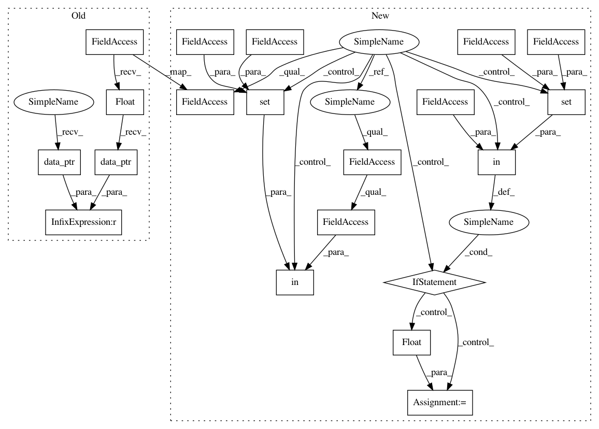

775122950d145382146e9120308432a9faf9a9b8,fairseq/optim/adafactor.py,Adafactor,step,#Adafactor#Any#,143
Before Change
else:
state["exp_avg_sq"] = state["exp_avg_sq"].type_as(grad)
p_data_fp32 = p.data.float()
state["step"] += 1
state["RMS"] = self._rms(p_data_fp32)
group["lr"] = self._get_lr(group, state)
beta2t = 1.0 - math.pow(state["step"], group["decay_rate"])
update = (grad**2) + group["eps"][0]
if factored:
exp_avg_sq_row = state["exp_avg_sq_row"]
exp_avg_sq_col = state["exp_avg_sq_col"]
exp_avg_sq_row.mul_(beta2t).add_(1.0 - beta2t, update.mean(dim=-1))
exp_avg_sq_col.mul_(beta2t).add_(1.0 - beta2t, update.mean(dim=-2))
// Approximation of exponential moving average of square of gradient
self._approx_sq_grad(exp_avg_sq_row, exp_avg_sq_col, update)
update.mul_(grad)
else:
exp_avg_sq = state["exp_avg_sq"]
exp_avg_sq.mul_(beta2t).add_(1.0 - beta2t, update)
torch.rsqrt(exp_avg_sq, out=update).mul_(grad)
update.div_(max(1.0, self._rms(update) / group["clip_threshold"]))
update.mul_(group["lr"])
if use_first_moment:
exp_avg = state["exp_avg"]
exp_avg.mul_(group["beta1"]).add_(1 - group["beta1"], update)
update = exp_avg
if group["weight_decay"] != 0:
p_data_fp32.add_(-group["weight_decay"] * group["lr"], p_data_fp32)
p_data_fp32.add_(-update)
// TODO: remove check once pyTorch avoids a copy for this case
if p.data_ptr() != p_data_fp32.data_ptr():
p.data.copy_(p_data_fp32)
return loss
After Change
else:
state["exp_avg_sq"] = state["exp_avg_sq"].to(grad)
p_data_fp32 = p.data
if p.data.dtype in {torch.float16, torch.bfloat16}:
p_data_fp32 = p_data_fp32.float()
state["step"] += 1
state["RMS"] = self._rms(p_data_fp32)
group["lr"] = self._get_lr(group, state)
beta2t = 1.0 - math.pow(state["step"], group["decay_rate"])
update = (grad**2) + group["eps"][0]
if factored:
exp_avg_sq_row = state["exp_avg_sq_row"]
exp_avg_sq_col = state["exp_avg_sq_col"]
exp_avg_sq_row.mul_(beta2t).add_(1.0 - beta2t, update.mean(dim=-1))
exp_avg_sq_col.mul_(beta2t).add_(1.0 - beta2t, update.mean(dim=-2))
// Approximation of exponential moving average of square of gradient
update = self._approx_sq_grad(exp_avg_sq_row, exp_avg_sq_col)
update.mul_(grad)
else:
exp_avg_sq = state["exp_avg_sq"]
exp_avg_sq.mul_(beta2t).add_(1.0 - beta2t, update)
update = exp_avg_sq.rsqrt().mul_(grad)
update.div_(
(self._rms(update) / group["clip_threshold"]).clamp_(min=1.0)
)
update.mul_(group["lr"])
if use_first_moment:
exp_avg = state["exp_avg"]
exp_avg.mul_(group["beta1"]).add_(1 - group["beta1"], update)
update = exp_avg
if group["weight_decay"] != 0:
p_data_fp32.add_(-group["weight_decay"] * group["lr"], p_data_fp32)
p_data_fp32.add_(-update)
if p.data.dtype in {torch.float16, torch.bfloat16}:
p.data.copy_(p_data_fp32)
return loss
In pattern: SUPERPATTERN
Frequency: 3
Non-data size: 20
Instances
Project Name: pytorch/fairseq
Commit Name: 775122950d145382146e9120308432a9faf9a9b8
Time: 2020-05-18
Author: myleott@fb.com
File Name: fairseq/optim/adafactor.py
Class Name: Adafactor
Method Name: step
Project Name: pytorch/fairseq
Commit Name: 775122950d145382146e9120308432a9faf9a9b8
Time: 2020-05-18
Author: myleott@fb.com
File Name: fairseq/optim/adam.py
Class Name: Adam
Method Name: step
Project Name: pytorch/fairseq
Commit Name: 775122950d145382146e9120308432a9faf9a9b8
Time: 2020-05-18
Author: myleott@fb.com
File Name: fairseq/optim/nag.py
Class Name: NAG
Method Name: step
Project Name: pytorch/fairseq
Commit Name: 775122950d145382146e9120308432a9faf9a9b8
Time: 2020-05-18
Author: myleott@fb.com
File Name: fairseq/optim/adafactor.py
Class Name: Adafactor
Method Name: step